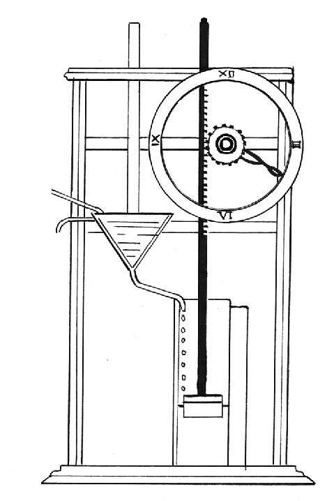

大约在公元前4000年，水钟就开始在中国被使用。但直至公元前1500年左右，才有充分证据表明，古埃及和巴比伦也在使用水钟。水钟是根据等时性原理让水匀速流入或流出某个容器，而容器的大小和水的流速接近某一固定时间区间，从而测量时间。
在印度，名为ghati或kapala的半个椰子壳就是一个简单的水钟。人们在椰壳底部钻一个很小但很精准的洞，然后将它放入一个装有水的碗中。每分钟60秒，椰壳能在24分钟内装满水再漏完。因此一天有60个小时，每小时24分钟。公元前4世纪，波斯国一个名为fenjaan的钟也采用了同样的原理，只是测量尺度有所不同。
在希腊，漏壶（又名分水器）也是一种水钟，即一个底部钻有小孔的罐子。水全部流完就意味着一段规定时间过去了。在雅典法庭上，为确保公平，人们在审判时会使用漏壶给原告和被告相同的时间。
如果要测量一段更长的时间，就需要持续维护和计数，水钟因此变得越发复杂。到公元前3世纪，希腊人发明了一个可以连续供应水流并让水溢出的系统——从而得以计算更长的时间。尽管在公元8世纪到11世纪之间，中东和中国的水钟制造曾有过一段相当繁荣的时期，但进一步的创新和机械化仍发展缓慢。

一个简单的水钟构造
中国的时钟发明家苏颂（1020—1101）创建了一个放置在约9米高塔楼上的“水运仪象台”。在这个“水运仪象台”上有一个星象仪装置，正面还有可以打开的面板，里面是一个显示报时的数字牌匾。
在13世纪的文字记载中，有过对另一个水钟的描述。它存在于叙利亚首都大马士革的倭马亚清真寺（Umayyad Mosque）中，将一天划分为12小时。该时钟带有指针，可在白天和夜间分别显示时间，还会释放铜球进行报时。